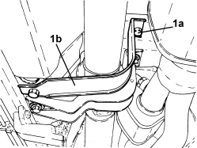
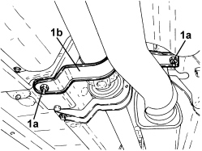

2410A61 AIR DUCT ON AUTOMATIC TRANSMISSION - R.R.
- Path
- Procedures > 24 TRANSMISSION > 2410 PROPELLER SHAFTS > 2410A TRANSMISSION SHAFT BETWEEN THE GEARBOX AND DIFFERENTIAL > 2410A61 AIR DUCT ON AUTOMATIC TRANSMISSION - R.R.
- Kind
- repair procedure (removal / refitting; the operation number is the code)
- Applies to
- engines: 3.2 JTS; all production periods
- Interactive page
- https://sloeber94.github.io/elrnDB-aBrrSpdr/en/#/946004278
Applies to: engines: 3.2 JTS; all production periods
 Removing
Removing
 Refitting
Refitting- Position the vehicle on a lift.
- FRONT BRACKET:
1. Undo the bolts (1a) and remove the propeller shaft protective bracket (1b).

Applies to: engines: 3.2 JTS; all production periods
- REAR BRACKET:
1. Undo the nuts (1a) and remove the propeller shaft lower protective bracket (1b).

Applies to: engines: 3.2 JTS; all production periods
Refitting
Removing- Place the front and rear brackets in their housings and tighten the fastenings.
- Remove the vehicle from the lift.